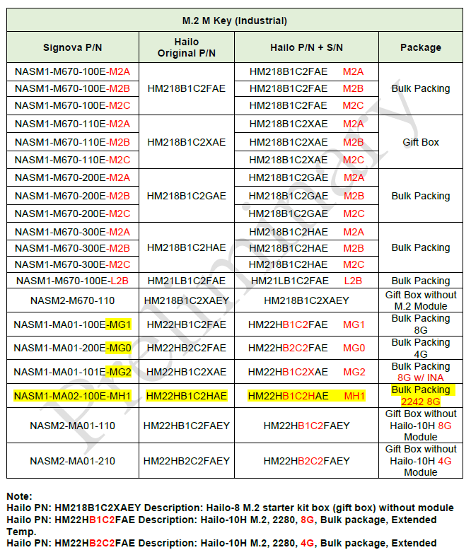
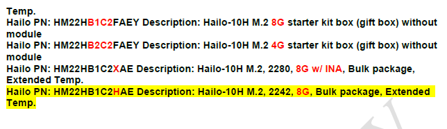
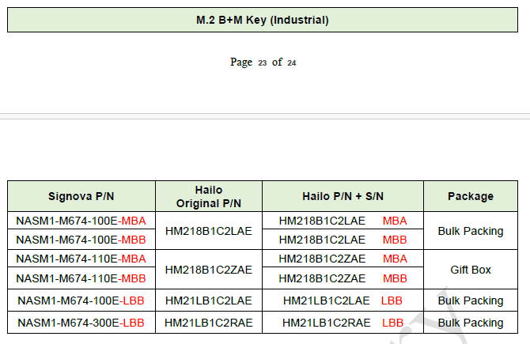
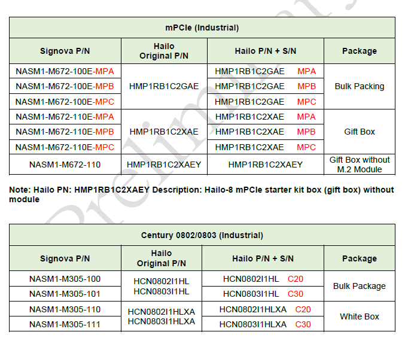

SN-GENERATOR 序號工具
首頁查詢
超恩連結維護
設定「VECOW各機種BIOSFW測試程式一覽表」的分享網址。留空儲存可移除連結。
資料來源維護
設定更新總表時使用的來源位置與讀取範圍。儲存後會從下一次「更新資料」開始生效。
來源名稱只決定輸出總表的工作表名稱；要讀取來源 Excel 的哪一張分頁，請另外設定上方的工作表規則。未啟用規則時匯入全部欄位並以第一列為欄名；啟用合併最近 N 檔時，任一選中檔案失敗會停止該來源並嘗試保留舊資料。
| 來源 | 路徑 | 讀取規則 | 操作 |
|---|
自定義序號生成
KOYA 型號主檔維護
Model 主檔維護 PN 與 full PN；月份／PO 會從「KOYA出貨」自動帶入，之後可手動編輯。
| Model | PN | full PN | 操作 |
|---|
月份／PO 對照
| 月份 | PO | 操作 |
|---|
NYX 型號主檔維護
Model 主檔維護 PN；月份會從「KOYA出貨」自動帶入，NYX 的 LOT 可留空後再編輯。
| Model | PN | 操作 |
|---|
月份／LOT 對照
| 月份 | LOT | 操作 |
|---|
預覽窗格
查詢後會顯示對應客戶的預覽資訊。
勤誠 FZG 序號生成
泉影 DEG 序號生成
起始流水號由您指定；重複使用同一組設定會產生相同序號，生成前請查看歷史。HL 與 Pizza Box 固定使用 DD 工廠碼。
M.2 M Key Industrial 編碼對照表




歷史記憶
按「查看歷史」顯示目前查詢目標的歷史資料。
客戶頁籤
已綁定 Excel（Sheet：營邦出貨）
資料來源設定
查詢與操作
營邦 預覽窗格
請先綁定Excel，並輸入工單號後點擊「解析工單」。
歷史記憶
按「查看歷史」以顯示目前歷史資料。
綁定 Excel（Sheet：倫飛出貨）
資料來源設定（倫飛）
查詢與操作（倫飛）
倫飛 預覽窗格
請先綁定共用 Excel（需包含「倫飛出貨」Sheet）。
歷史記憶
按「查看歷史」以顯示目前歷史資料。
已綁定 Excel（Sheet：超恩出貨）
資料來源設定（超恩）
查詢與操作（超恩）
超恩 預覽窗格
請先綁定共用 Excel（需包含「超恩出貨」Sheet）。
歷史記憶
按「查看歷史」以顯示目前歷史資料。
已綁定 Excel（Sheet：KOYA出貨）
資料來源設定（KOYA）
查詢與操作（KOYA）
KOYA 預覽窗格
請先綁定共用 Excel（需包含「KOYA出貨」Sheet）。
歷史記憶
按「查看歷史」以顯示目前歷史資料。
已綁定 Excel（Sheet：組測序號編碼）
資料來源設定（赫星）
"H:\@思創出貨計畫(Cubepilot)\各機種貼紙代碼\組裝、包裝階序號編碼.xls"
查詢與操作（赫星）
赫星 預覽窗格
請先綁定赫星 Excel（組測序號編碼），再輸入 Model 關鍵字查詢。
歷史記憶
按「查看歷史」以顯示目前歷史資料。
已綁定 Excel（Sheet：板階序號編碼）
資料來源設定（Cubepilot）
"H:\@思創出貨計畫(Cubepilot)\各機種貼紙代碼\PCB板階、測試階序號编碼.xls"
查詢與操作（Cubepilot）
Cubepilot 預覽窗格
可直接使用自定義序號生成；已綁定 Excel（板階序號編碼）可搭配機種資料查詢。
歷史記憶
按「查看歷史」以顯示目前歷史資料。